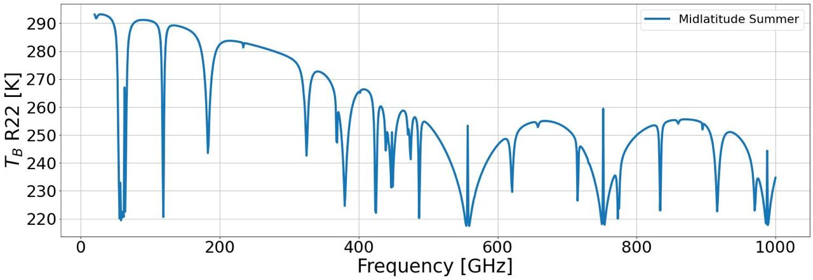
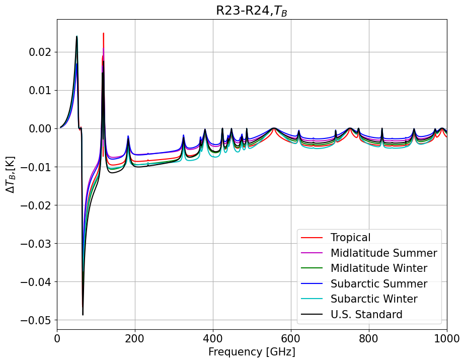

PyRTlib documentation#
PyRTlib allows to simulate and calculate radiometric parameters and estimting propogation parameters using as input meteorological data. Some meteorological dataset are built-in in PyRTlib which can be download and used directly in PyRTlib. It considers atmospheric profiles from both radiosounding observations (RAOB) and model reanalysis (ERA5). RAOB profiles come from Wyoming Upper Air Archive (University of Wyoming) and NCEI’s Integrated Radiosonde Archive version 2 (IGRA2) by the National Climatic Data Center (NCDC) of the National Oceanic and Atmospheric Administration (NOAA).
PyRTlib also allows to quantify absorption model uncertainty due to uncertainty in the underlying spectroscopic parameters. [Cimini-2018] The approach is applied to a widely used microwave absorption model [Rosenkranz-2017], on which PyRTlib is based, and radiative transfer calculations at any frequencies range, which are commonly exploited for atmospheric sounding by microwave radiometer (MWR).
The source code for pyrtlib python package is hosted on github.
Note
The software is intended as an educational tool with limited ranges of applicability, so no guarantees are attached to any of the codes.
Quick start#
from pyrtlib.tb_spectrum import TbCloudRTE
from pyrtlib.climatology import AtmosphericProfiles as atmp
from pyrtlib.utils import mr2rh, ppmv2gkg
Atmospheric profile definition:
z, p, _, t, md = atmp.gl_atm(atmp.MIDLATITUDE_SUMMER)
Units conversion:
gkg = ppmv2gkg(md[:, atmp.H2O], atmp.H2O)
Relative humidity of \(H_2O\) (water vapor)
rh = mr2rh(p, t, gkg)[0] / 100
Deifinition of angles and frequencies:
ang = np.array([90.])
frq = np.arange(20, 1001, 1)
Initialize parameters for main execution:
rte = TbCloudRTE(z, p, t, rh, frq, ang)
Set absorption model:
rte.init_absmdl('R22SD')
Execute model by computing upwelling radiances:
df = rte.execute()
df.tbtotal
0 293.119811
1 292.538088
2 291.736672
3 291.913658
4 292.493971
...
976 230.179993
977 231.435965
978 232.592915
979 233.666322
980 234.667522
Name: tbtotal, Length: 981, dtype: float64
Preview of the output dataframe (see pyrtlib.tb_spectrum.TbCloudRTE.execute() for more info):
tbtotal |
tbatm |
tmr |
tmrcld |
tauwet |
taudry |
tauliq |
tauice |
|---|---|---|---|---|---|---|---|
293.119811 |
0.0 |
282.644145 |
0.0 |
0.085189 |
0.012949 |
0.0 |
0.0 |
292.538088 |
0.0 |
282.188067 |
0.0 |
0.135297 |
0.013615 |
0.0 |
0.0 |
… |
… |
… |
… |
… |
… |
… |
… |
234.667522 |
0.0 |
234.667522 |
0.0 |
474.835275 |
0.329120 |
0.0 |
0.0 |
Plotting result:
Plotting of upwelling \(\Delta T_b\) using the last two absorption models available in PyRTlib for six reference atmosphere climatology.
Cite as#
Please cite us:
Larosa, S., Cimini, D., Gallucci, D., Nilo, S. T., and Romano, F.: PyRTlib: an educational Python-based library for non-scattering atmospheric microwave radiative transfer computations, Geosci. Model Dev., 17, 2053–2076, https://doi.org/10.5194/gmd-17-2053-2024, 2024.
Larosa, S., Cimini, D., Gallucci, D., Nilo, S. T., & Romano, F. (2024). PyRTlib: a python package for non-scattering line-by-line microwave Radiative Transfer simulations.. Zenodo. https://doi.org/10.5281/zenodo.8219145